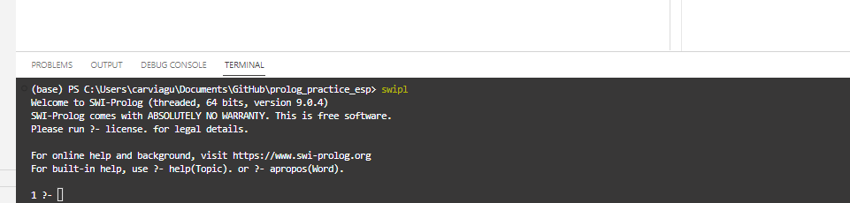

Introducción a PROLOG
Aprende lo indispensable para trabajar con PROLOG
Introducción al entorno de trabajo que usaremos en las prácticas, bases conceptuales de trabajo y uso de PROLOG.
Objetivos de la sesión
- Entender el concepto de sistema experto y usos prácticos de este a nivel negocio.
- Conocer el entorno de PROLOG, el software de uso y las principales instrucciones de trabajo con este lenguaje.
¿Qué es PROLOG?
PROLOG es un lenguaje de programación basado en el paradigma declarativo, en concreto, lógico. Este esta basado en la lógica de primer orden. Nos va a permitir…
- Representar la definición de relaciones mediante reglas.
- Expresar cuál es la solución a un problema.
Es un lenguaje adecuado para poder representar problemas que requieran…
- Razonamiento: sistemas expertos, bases deductivas, etc.
- Manipulación simbólica y representación explícita del conocimiento
- Procesamiento del lenguaje natural
Las siglas de PROLOG vienen del fránces PROgramación en LOGique,
Sistemas Basados en el Conocimiento
Una de sus aplicaciones es el desarrollo de Sistemas Basados en el Conocimiento, en inglés Knowledge Base System (KBS).
Un KBS es un sistema de cómputo que engloba conocimiento organizado concerniente a algún área específica de la experiencia humana suficiente para actuar como una herramienta de consulta.
PROLOG es un lenguaje útil para estos sistemas pues ofrece una sintaxis adecuada para poder expresar ese conocimiento mediante un conjunto de reglas y hechos. Por otro lado ofrece la sintaxis a través de la cual consultar al sistema que debe de ser capaz a partir de la base de conocimiento creada responder a las preguntas formuladas.

¿Cómo vamos a trabajar?
Para las prácticas necesitamos instalar PROLOG en nuestros ordenadores, haremos uso de SWI-PROLOG. Este contiene todas las herramientas básicas para poder trabajar con este lenguaje.
Además podemos hacer uso de editores de código más avanzados que nos permitirán trabajar mejor.
SWI PROLOG
Para estas prácticas nosotros contaremos con una distribución de PROLOG, llamada SWI PROLOG. Esta es de código abierto y nos permitirá poder trabajar e intrepretar código de PROLOG.
Su web oficial es esta: SWI-PROLOG
Este documento asume que estas trabajando en el entorno del laboratorio del curso, pero si necesitas instalar PROLOG y otros compnentes útiles para trabajar desde casa puedes ir a los @anexos de esta práctica.
Entorno de SWI PROLOG
Una vez instalado encontrarás distintas cosas en tu ordenador:

- SWI-Prolog: El programa por defecto de PROLOG, este abre una terminal con el compilador y herramientas cargadas. A continuación veremos de forma básica como manejarse con este.
- SWI-Prolog (console): Esto es una consola similar a CMD de windows o la consola de MacOS. No vamos a utilizarla.
Abre SWI-Prolog, tendrás ante ti una consola donde puede introducir los distintos comandos.
En la consola se muestra el símbolo ?- que es el indicador de PROLOG para pedir al usuario que introduzca una instrucción.
Comandos en PROLOG
Como norma general la estructura básica de los comandos para SWIPL es la siguiente
<nombre_comando>.Como puedes observar después de cada comando u orden tendremos que escribir un punto, dando a entender al interprete que hemos terminado de escribir la orden. Esto es algo similar al ; que habrás visto en otros lenguajes de programación como JAVA, de esta mandera le explicamos a SWIPL que ahí termina nuestra instrucción.
Lo que tienes ante ti es una consola, las consolas nos permiten dar ordenes a nuestro ordenador y navegar a un bajo nivel entre los directorios y archivos, sin una interfaz visual como a la que estamos acostumbrados. En esta podemos dar instrucciones al ordenador y nos irá mostrando el output resultado de ejecutarlas, cada vez que termine de ejecutar nos volverá a mostrar el indicador para introducir una instrucción, en este caso ?-
Si bien la consola habitual de tu ordenador la ejecutarías con otro programa distinto como el CMD o PowerShell de Windows, esta terminal emula este estilo pero teniendo ya cargado un interprete de PROLOG que permitirá que puedas cargar códigos de PROLOG y ejecutar instrucciones directamente.
Ahora aprenderemos los distintos comandos e instrucciones de navegación en una terminal de PROLOG, muchos de los comandos vienen originalmente de las terminales de Windows como PowerShell o Linux, y tienen las mismas funcionalidades.
Conocer mi directorio con pwd.
El primer comando que vamos a usar es pwd. Puedes escribirlo y presionar enter. Verás que PROLOG te devuelve una dirección, que es donde te encuentras ahora mismo y finalmente un true. Ahora mismo ese true no nos aporta nada más que indicarnos que la ejecución a terminado correctamente. Pero esta respuesta es una de las claves del lenguaje lógico con el que estamos trabajando y que explicaremos más adelante.
Tienes que tener en cuenta que si vien estas ejecutando una terminal de SWI PROLOG, estas trabajando en tu ordenador y al igual que harías con una terminal normal de tu ordenador, esta te permite navegar por tu ordenador.
Por defecto cuando ejecutamos y abrimos PROLOG este lee desde nuestra carpeta raíz, la de nuestro usuario.
Conocer el contenido del directorio con ls.
Ahora que sabes donde estas, vamos a investigar que contiene el directorio donde nos encontramos. Para ello puedes ejecutar el comando ls.
Por último puedes revisar el contenido del directorio donde te encuentras, simplemente con el comando ls.. Verás que la terminal te devuelve el listado de archivos o carpetas que hay.
Este comando mostrará en la terminal todo el conjunto de directorios y ficheros que existen. Los directorios apareceran con una / al final del nombre, por ejemplo ejercicios/; mientras que los archivos apareceran con su extensión, por ejemplo hola.docx sería un word mientras que codigo.pl sería un archivo de código de PROLOG.
Primeros pasos con PROLOG
Prueba a introducir las siguientes intrucciones ahora:
- 7 @> 6.
- 5 is 5.
- 4 @< 3.
- 9 is 2+3.
Fijate en el punto final que ponemos en cada una para indicar a PROLOG donde termina la instrucción. ¿Qué te devuelve en cada caso?
Si te fijas PROLOG funciona como un chat al que podemos hacer preguntas simples (númericas en este caso). A lo largo de las prácticas veremos como crear algo más complejo y poder usarlo como fuente de conocimiento.
Si bien el uso que le vamos a dar a PROLOG será relativo a Lógica, vamos a conocer algunos componentes básicos del lenguaje que podemos usar.
Tipos de elementos
En prolog podemos distinguir los siguientes tipos de elementos principales:
- Constantes o Átomos, hacen referencia a objetos, propiedades o relaciones. Se escriben con minuscula.
atom(luis).
atom(padre).- Números, enteros o reales, con o sin signo.
number(2).
number(-5).
number(2e10).- Variables, cadenas de letras, números o incluso el símbolo
_, deben de empezar por mayúscula o con_para que PROLOG las identifique como tal.
variable(X).
variable(Luis).
variable(_var).- Estructuras, terminos compuestos por otros terminos: nombre_estructura(term1, term2, …, termN), a los terminos se les llaman argumentos y al nombre de la estructura predicado.
Unificación
La unificación es el proceso mediante el cual PROLOG evalua las operaciones lógicas. Ya lo has visto funcionar antes, cuando le damos una instrucción evalua la comparación y devuelve true o false según corresponda. Viene definida por el operador =.
Algunos ejemplos:
X = 3.
6 = 6.
X = X.
X = 1 + 2.Fijate en que ha pasado en la última instrucción, ¿que ha sido asignado a X?
PROLOG no ha realizado la operación y ha asignado directamente la estructura
1 + 2a la variableX.
Para solucionar esto, si queremos que se evalue la operación aritmética podemos usar el unificador is que evalua primera las operaciones y después compara.
X is 1 + 2.Fijate como funciona distinto aquí…
5 = 3 + 2.
5 is 3 + 2.En el primer caso es falso mientras que en el segundo es verdad. ¿Por qué?
En el primer caso comparamos un número con una estructura 3 + 2.
En el segundo comparamos un número con el número resultado de operar aritméticamente la operación 3 + 2
Operadores comparativos
Para comparar elementos tenemos diversos operadores, los más habituales igual y distinto. Pero tenemos que tener en cuenta que dependiendo de si queremos una evaluación aritmética antes el operador cambia…
Operadores con evaluación aritmética
| Operador | Significado |
|---|---|
| is | unificación directa |
| =:= | igualdad |
| =\= | desigualdad |
| >/< | mayor / menor |
| >=/=< | mayor o igual / menor o igual |
Operadores sin evaluación aritmética
| Operador | Significado |
|---|---|
| = | unificación directa |
| == | igualdad |
| \== | desigualdad |
| @> / @< | mayor / menor |
| @>= / @=< | mayor o igual / menor o igual |
En este tipo de comparativas al no realizarse la evaluación es necesario que los terminos sean exactamente iguales. Mira el siguiente ejemplo…
A = 5.
B = 5.
A == B.
A == A.Listas
Finalmente podemos trabajar con listas. Estas se representan por []. Por ejemplo [a, 1, 2.0]. Puedes tener distintos tipos de elementos en las listas.
Podemos virificar si dos listas son iguales con [1, 2, a] == [1,2,a].
Podemos comprobar si una lista tiene un elemento con member(4.0, [c, 3, 4.0]).
Podemos ver el tamaño de una lista con length([3,0.0,x], A). Fijate que tenemos que escribir la lista y la variable donde guardamos el resultado, en este caso A.
Podemos unir dos listas con append([h,o], [l,a], B)., en este caso ponemos la primera lista, la segunda y el resultado se guarda en la variable B. Prueba a escribir estas versiones de la instrucción: append([h,o], B, [h,o,l,a]). o append(A, B, [h,o,l,a]). ¿Qué esta pasando? ¿Qué devuelve PROLOG y por qué?
Finalizando PROLOG
Finalmente, puedes cerrar la terminal y salir del programa mediante el comando halt.
Este comando te permitirá salir de la terminal de forma correcta.
Escribiendo código de PROLOG
Para trabajar con PROLOG necesitaremos un editor de texto, como has podido ver desde la consola podemos darle pequeñas instrucciones, sin embargo para tareas más complejas donde se requiera un conjunto de hechos necesitaremos desarrollar programas más extensos.
Los archivos de PROLOG poseen una extensión .pl al final. Puedes editarlos perfectamente con un bloc de notas, NotePad++ o similar.
Anexos
Instalando SWI PROLOG
Aunque en la laboratorio puedes encontrar SWI PROLOG instalado para trabajar, puedes y es recomendable instalarte la versión de SWI PROLOG en tu ordenador para trabajar desde casa y poder prácticar.
Accede a la página oficial de SWI-PROLOG y en descarga la versión adecuada para tu ordenador según tu sistema operativo.
Durante la instalación sigue las instrucciones, es muy recomendable permitir que instale el programa en el PATH (add swipl to the system PATH), de esta forma podremos usarlo desde cualquier terminal y facilitar las tareas.
También existe una versión online, que si bien no es perfecta puede servirte para practicar y realizar ejercicios de forma complementaria. La puedes encontrar aquí.
Instalando Visual Studio Code (opcional)
Una propuesta para las prácticas será utilizar Visual Studio Code, este entorno es totalmente customizable permitiendo trabajar con múltiples lenguajes de programación e incorporando diversas extensiones que permiten adaptarlo a la tarea de programación que deseemos. Puedes descargarlo e instalarlo en tu ordenador aquí.
Una vez instalado veremos que configuraciones adicionales necesitamos para poder trabajar con PROLOG. Una vez abierto ve a la tienda de extensiones, donde deberás de buscar PROLOG e instalarlo. Esto permitirá que Visual Studio pueda leer y ayudarte a escribir mejor código de PROLOG, también coloreará el código para mejor visualización.

Una de las ventajas de Visual Studio es que podemos trabajar con SWI-PROLOG sin necesidad de abrir la terminal externa del programa. Visual Studio nos permite abrir terminales en el propio entorno y trabajar desde ahí. Para ello debes de ir Terminal > New Terminal en las opciones superiores de Visual Studio Code. Se te abrirá una terminal en la parte inferior del entorno. Esta terminal no es la misma que la de PROLOG, sino la terminal del sistema (CMD, PowerShell, o el Shell)
Para acceder a PROLOG, si todo ha sido instalando correctamente, basta con escribir swipl y dar a enter. Ahora se activará dentro de la terminal PROLOG y verás algo similar a la terminal externa. Ahora ya puedes trabajar con prolog.

De esta forma podrás a la vez que editar un programa de PROLOG ejecutarlo y ver sus resultados en la misma ventana.